El hackeo de US$6.300 millones a Binance: lo que le hizo al mercado cripto, y lo que noThe $6.3B Binance hack: what it did to crypto markets, and what it didn't
El 29 de octubre de 2026 a las 20:05 UTC las wallets calientes de Binance en diez blockchains empezaron a enviar
monedas a un atacante: 6.360 millones de dólares según TRM Labs, el mayor robo cripto registrado. Bitcoin cayó bajo
77.000 dólares y los titulares culparon al hackeo. Pero cinco minutos antes había cerrado Nueva York y los futuros del Nasdaq caían por
los resultados de Amazon e Intel. Desarmé esa noche minuto a minuto con datos reales de Binance, Coinbase, OKX y Yahoo, la comparé con
36 hackeos a exchanges desde 2011 y probé si las noticias, la guerra y la macro pueden pronosticar el precio.
At 20:05 UTC on 29 October 2026 Binance's hot wallets on ten blockchains began sending coins to an attacker:
$6.36 billion according to TRM Labs, the largest crypto theft on record. Bitcoin fell below $77,000 and the headlines
blamed the hack. But five minutes earlier New York had closed and Nasdaq futures were falling on Amazon's and Intel's earnings. I took
that night apart minute by minute with real data from Binance, Coinbase, OKX and Yahoo, compared it with 36 exchange hacks since 2011,
and tested whether news, war and macro data can forecast the price.
$6.36Brobados en 10 blockchains (TRM Labs)stolen across 10 blockchains (TRM Labs)
73%de la caída de BTC (-5,1%) la predice la bolsa tecnológicaof BTC's fall (-5.1%) is predicted by tech stocks
42 minantes de que se admitiera el robo, el precio de BNB ya lo delatababefore the theft was admitted, BNB's price already gave it away
$8.7Bretirados por clientes en 2 días al reabrir (6% de los activos)withdrawn by customers in 2 days after reopening (6% of assets)
En 30 segundosIn 30 seconds
El hackeo dolió, pero no fue lo único. Bitcoin cayó 5,1% hasta el 2 de noviembre, y la caída de las tecnológicas predice cerca de 3,4% a 3,7% de eso.
El precio delató el robo. BNB cayó tanto que una alarma simple saltó a las 20:33 UTC, 42 minutos antes de que CZ lo admitiera.
El castigo fue para Binance, no para lo robado. Las monedas de las cadenas vaciadas no cayeron más que el resto; BNB sí.
Hubo corrida, pero ordenada. Los clientes sacaron 8,7 mil millones de dólares en dos días, 6% de lo que había.
La historia no muestra un efecto claro. Tras 35 hackeos anteriores, BTC a una semana no se distingue de una fecha cualquiera; a un año queda -10,9% contra +15,6%, sin ser concluyente (p = 0,12).
Nadie puede predecir el precio de mañana con estos datos. Cinco modelos, incluidas redes neuronales, no superan a decir "queda igual". La turbulencia sí se anticipa, y para eso bastan los datos de precio.
The hack hurt, but it was not alone. Bitcoin fell 5.1% to 2 November, and the tech sell-off predicts about 3.4% to 3.7% of that.
The price gave the theft away. BNB fell so hard that a simple alarm fired at 20:33 UTC, 42 minutes before CZ admitted it.
Binance was punished, not the stolen coins. Coins on drained chains did not fall more than the rest; BNB did.
There was a run, but an orderly one. Customers took out $8.7 billion in two days, 6% of holdings.
History shows no clear effect. After 35 earlier hacks, BTC a week later looks like any other date; a year later it stands at -10.9% against +15.6%, which is not conclusive (p = 0.12).
Nobody can predict tomorrow's price with this data. Five models, neural networks included, do not beat saying "no change". Turbulence can be anticipated, and price data is enough for that.
Explora el precio tú mismoExplore the price yourselfElige moneda y plazo. Verde sube, rojo baja. Las flechas marcan el hackeo.Pick a coin and a horizon. Green up, red down. Arrows mark the hack.
Velas reales de Binance spot (pares USDT). Arrastra y haz zoom. Barras inferiores: volumen en USD. Futuros: perpetuos USDT e interés abierto en millones de dólares. Semana: velas de 15 minutos; Mes, Año e Histórico: diarias (Histórico en escala logarítmica, desde que el par se lista en Binance). El efecto a un mes o un año aún no se puede observar. En las vistas diarias, las líneas amarillas son el pronóstico con su banda de 90%, hecho con datos al 2 de noviembre.Real Binance spot candles (USDT pairs). Drag and zoom. Lower bars: USD volume. Futures: USDT perpetuals and open interest in $M. Week: 15-minute candles; Month, Year and All: daily (All on a log scale, since the pair listed on Binance). The effect at one month or one year cannot be observed yet. On daily views, the yellow lines are the forecast and its 90% band, made with data to 2 November.Charts by TradingView
01¿Qué pasó esa noche?What happened that night?
Respuesta cortaShort answer
A las 20:05 UTC del 29 de octubre empezaron a salir monedas de Binance hacia un atacante. En una hora BNB perdió cerca de 8% y BTC 3%. Binance suspendió los retiros a las 00:13 y reabrió 54 horas después.
At 20:05 UTC on 29 October coins began leaving Binance for an attacker. Within an hour BNB had lost about 8% and BTC 3%. Binance halted withdrawals at 00:13 and reopened 54 hours later.
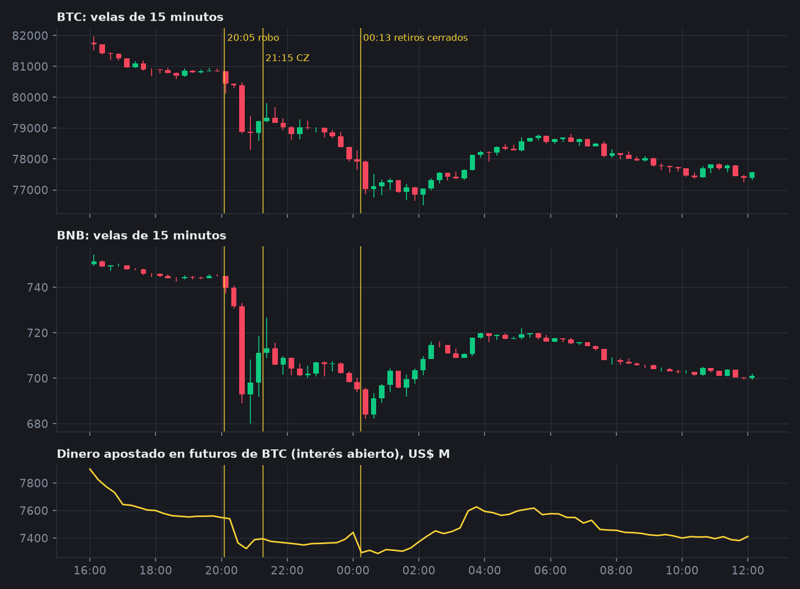
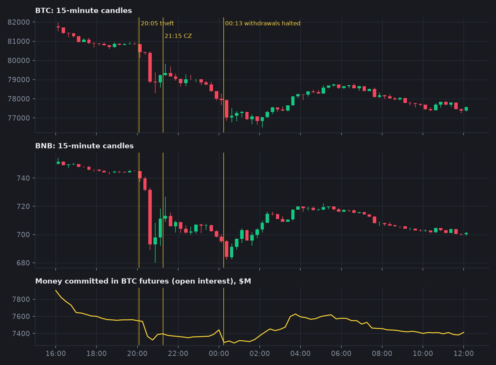
Cómo leerlo: cada vela es 15 minutos: verde sube, roja baja; la mecha es el rango. Las líneas amarillas son los hitos. Abajo, cuánto dinero había apostado en futuros de BTC: cae de golpe cuando la gente cierra posiciones o la liquidan.How to read it: each candle is 15 minutes: green up, red down; the wick is the range. Yellow lines are the milestones. Below, how much money was committed in BTC futures: it drops suddenly when people close or are liquidated.
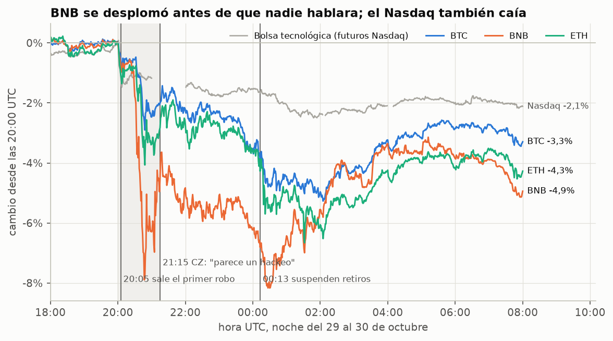
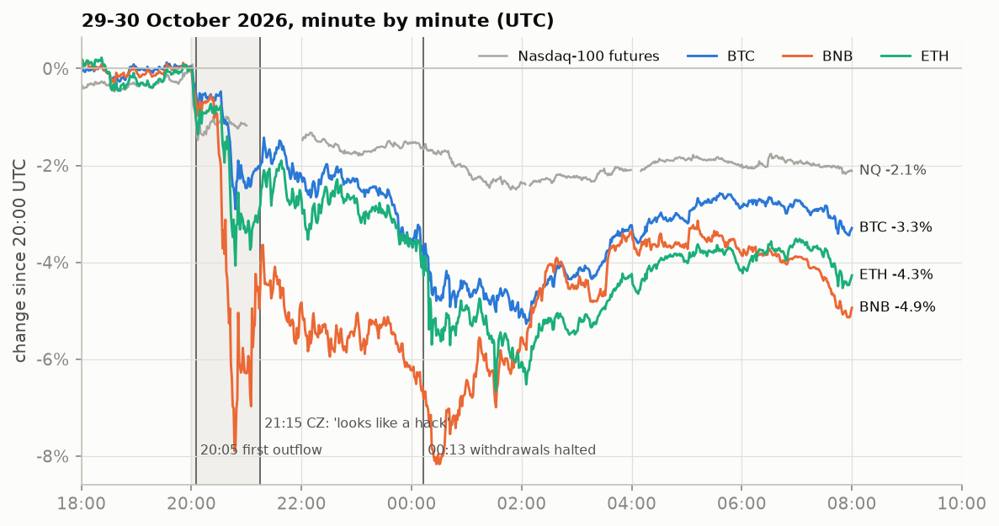
Cómo leerlo: todas las líneas parten en 0% a las 20:00 UTC, y muestran cuánto subió o bajó cada una desde ahí. La zona gris es el rato en que nadie había dicho nada todavía. La línea gris clara es la bolsa tecnológica: también caía, por los resultados de Amazon e Intel.How to read it: all lines start at 0% at 20:00 UTC and show how much each rose or fell from there. The grey zone is the time when nobody had said anything yet. The light grey line is tech stocks: also falling, on Amazon's and Intel's earnings.
From 20:00 UTC, Oct 29, to
BTC
ETH
BNB
XRP
SOL
TRX
Desde las 20:00 UTC del 29 oct hasta
BTC
ETH
BNB
XRP
SOL
TRX
21:15, CZ: "parece un hackeo"21:15, CZ: "does look like a hack"
02¿Cayó por el hackeo o por la bolsa?Did it fall because of the hack or the stock market?
Respuesta cortaShort answer
Por los dos, y más por la bolsa. Justo cuando partió el robo, Amazon e Intel publicaron resultados y las tecnológicas cayeron. De los 0,1 puntos que cayó BTC hasta el 2 de noviembre, 0,0 a 0,0 los predice ese mercado; solo 0,0 a 0,0 son propios del hackeo.
Both, and more the stock market. Just as the theft began, Amazon and Intel published earnings and tech stocks fell. Of the 0.1 points BTC fell to 2 November, that market predicts 0.0 to 0.0; only 0.0 to 0.0 belong to the hack.
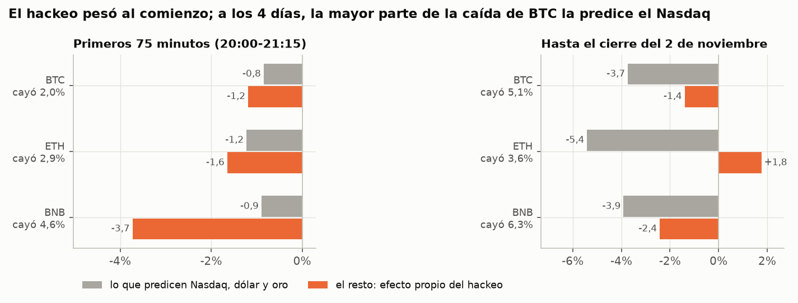
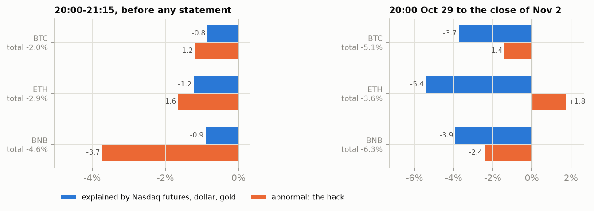
Cómo leerlo: gris es lo que BTC habría hecho solo por moverse junto a Nasdaq, dólar y oro, según su relación de la semana previa. Naranjo es el resto, lo propio del hackeo. A la izquierda, la primera hora y cuarto: domina el hackeo. A la derecha, cuatro días después: domina la bolsa, salvo en BNB, que conserva su castigo. ETH terminó mejor de lo esperado.How to read it: grey is what BTC would have done just by moving with the Nasdaq, dollar and gold, using their relationship in the prior week. Orange is the rest, the hack's own. Left, the first 75 minutes: the hack dominates. Right, four days later: the stock market dominates, except BNB, which keeps its punishment. ETH ended better than expected.
El modelo explica 37% de los movimientos de 5 minutos de BTC en una semana tranquila, así que es una aproximación. Antes de cualquier declaración, el efecto propio en BTC fue -1,2%.
The model explains 37% of BTC's five-minute moves in a calm week, so it is an approximation. Before any statement, the hack's own effect on BTC was -1.2%.
03¿El mercado se enteró antes que el público?Did the market know before the public?
Respuesta cortaShort answer
Sí. El robo se ve en la blockchain, y alguien lo estaba mirando. BNB empezó a caer respecto de BTC antes de cualquier declaración: una alarma simple saltó 42 minutos antes de que CZ lo admitiera. En el hackeo de 2019 pasó lo contrario: saltó 14 minutos después del anuncio.
Yes. The theft is visible on the blockchain, and someone was watching. BNB began falling against BTC before any statement: a simple alarm fired 42 minutes before CZ admitted it. In the 2019 hack the opposite happened: it fired 14 minutes after the announcement.
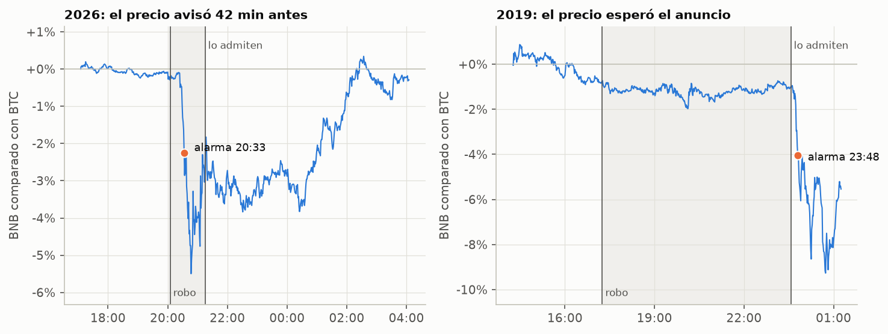
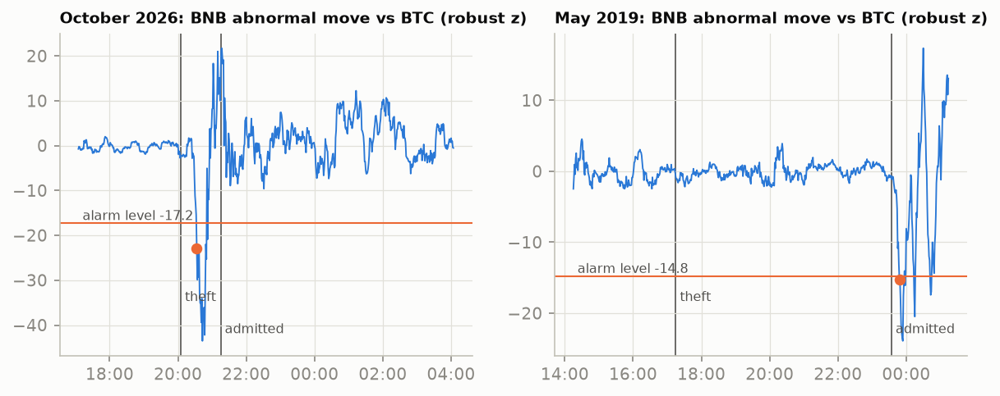
Cómo leerlo: la línea es BNB dividido por BTC: si baja, BNB cae más que el mercado. La zona gris va desde el robo hasta que se admitió. El punto naranjo es cuando sonó la alarma. En 2026 suena dentro de la zona gris, antes de cualquier aviso; en 2019 BNB casi no se movió hasta el anuncio.How to read it: the line is BNB divided by BTC: when it falls, BNB is falling more than the market. The grey zone runs from the theft until it was admitted. The orange dot is when the alarm rang. In 2026 it rings inside the grey zone, before any notice; in 2019 BNB barely moved until the announcement.
La alarma está calibrada para sonar como máximo una vez al mes, y en los 30 días previos al hackeo dio 0 falsas alarmas. En esos primeros 75 minutos, BNB transó 55 veces su volumen normal.
The alarm is set to ring at most once a month, and it gave 0 false alarms in the 30 days before the hack. In those first 75 minutes, BNB traded 55 times its usual volume.
04¿Qué monedas sufrieron y cuáles ya se recuperaron?Which coins suffered, and which have recovered?
Respuesta cortaShort answer
Se castigó a BNB, el token de Binance. Las monedas robadas no cayeron más que las otras: el mercado no apostó a que el ladrón vendería. Al 2026-11-04, ETH y XRP ya superan su precio previo; BTC está a -0,4%; BNB a -3,3%.
BNB, Binance's token, was punished. Stolen coins did not fall more than the others: the market did not bet on the thief selling. As of 2026-11-04, ETH and XRP are back above their earlier price; BTC stands at -0.4%; BNB at -3.3%.
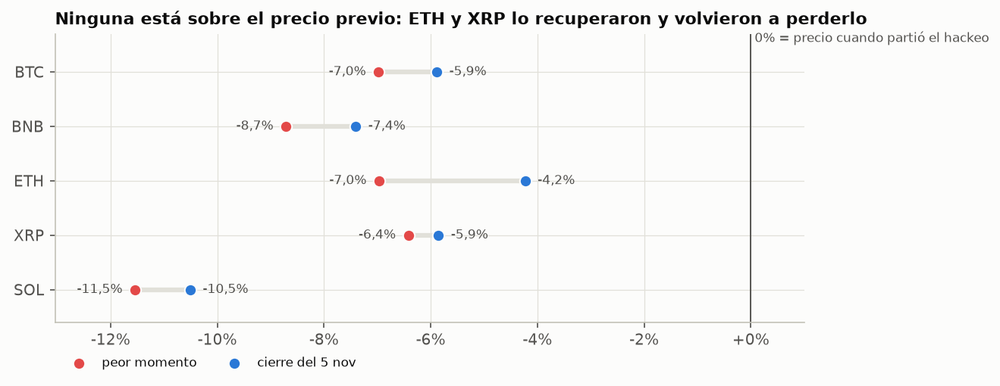
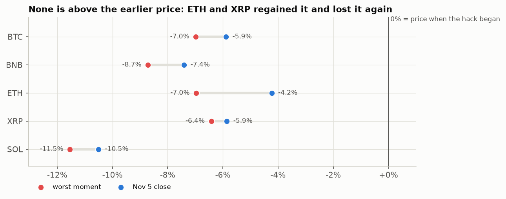
Cómo leerlo: el 0% es el precio de cada moneda a las 20:00 UTC, cuando partió el hackeo. El punto rojo es lo peor que llegó a caer y el azul dónde está en el último cierre. Si el azul pasa a la derecha del 0%, ya se recuperó.How to read it: 0% is each coin's price at 20:00 UTC, when the hack began. The red dot is the worst it fell and the blue one where it stands at the last close. If blue is right of 0%, it has recovered.
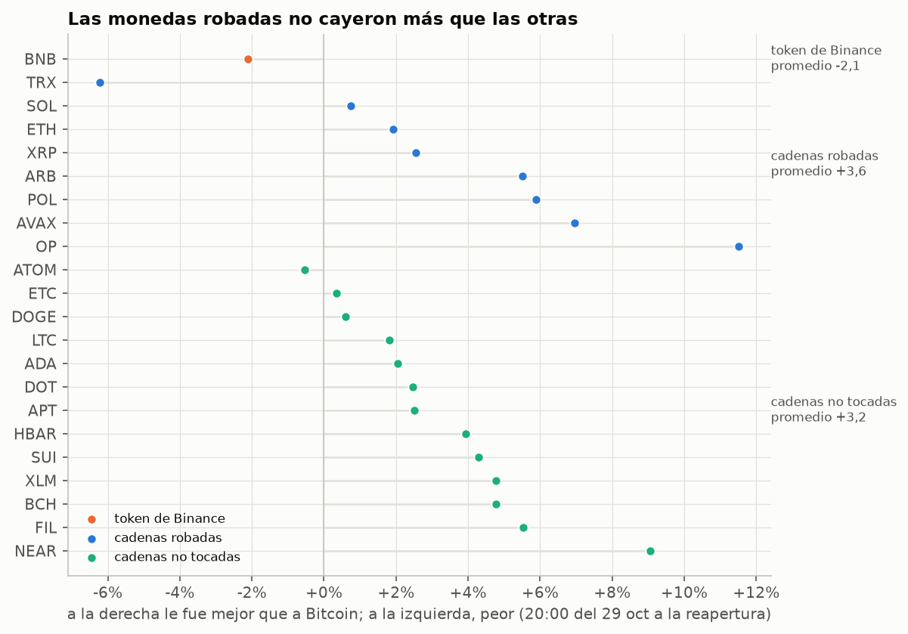
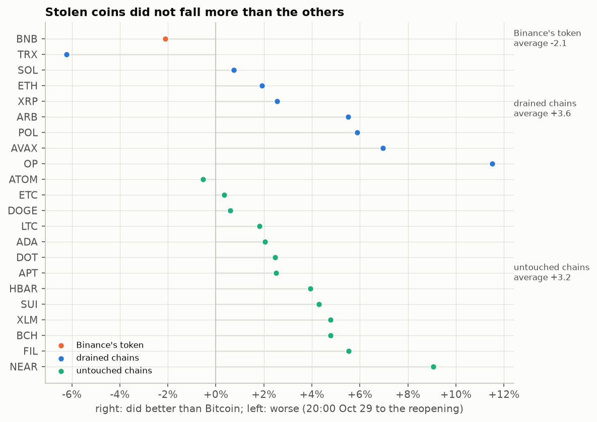
Cómo leerlo: cada punto es una moneda. A la derecha del 0% le fue mejor que a Bitcoin; a la izquierda, peor. Si el mercado temiera que el ladrón vendiera, los puntos azules estarían a la izquierda de los verdes. No lo están.How to read it: each dot is a coin. Right of 0% it did better than Bitcoin; left, worse. If the market feared the thief selling, the blue dots would sit left of the green ones. They do not.
Promedio hasta la reapertura: robadas +3,6%, no tocadas +3,2%, BNB -2,1%. La diferencia entre robadas y no tocadas no es distinguible del azar (p = 0,81; en los primeros 75 minutos p = 0,17). TRX es la rareza: subió 8% durante el hackeo y después lo devolvió todo. No encontré evidencia que lo explique.
Average to the reopening: stolen +3.6%, untouched +3.2%, BNB -2.1%. The gap between stolen and untouched cannot be told from chance (p = 0.81; in the first 75 minutes p = 0.17). TRX is the oddity: it rose 8% during the hack and then gave it all back. I found no evidence that explains it.
05¿Cuánto se transó y quién vendió?How much traded, and who sold?
Respuesta cortaShort answer
El volumen de BNB fue 5,2 veces lo normal el 29 de octubre, y a los dos días ya había vuelto a su nivel. Esa noche se vendieron a mercado 176 millones de dólares más de BTC de los que se compraron, y 70% vino de órdenes de menos de 10,000 dólares.
BNB's volume was 5.2 times normal on 29 October, and two days later it was back at its usual level. That night $176 million more BTC was sold at market than bought, 70% of it in orders under $10,000.
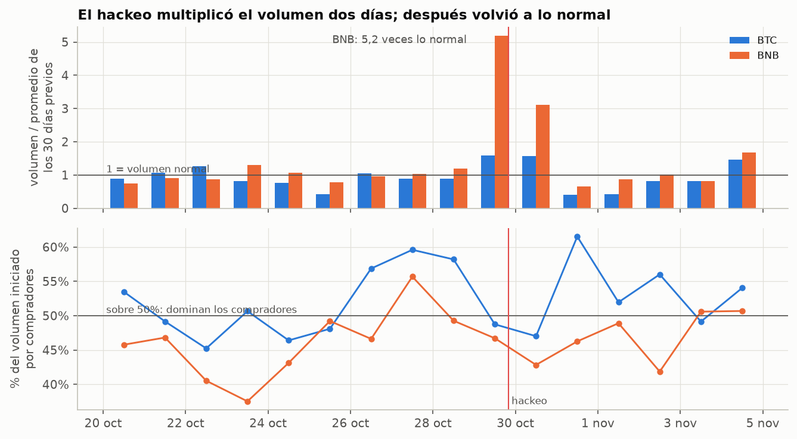
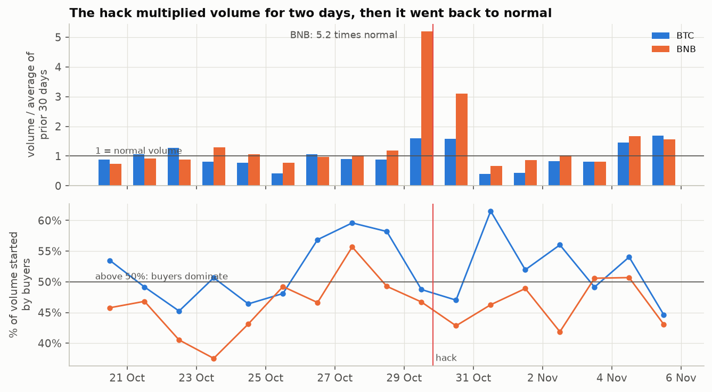
Cómo leerlo: arriba, cuántas veces el volumen normal se transó cada día: 1 es un día corriente. Abajo, qué parte del volumen la iniciaron compradores apurados: bajo la línea de 50% mandan los vendedores. La línea roja es el hackeo.How to read it: top, how many times normal volume traded each day: 1 is an ordinary day. Bottom, what share of volume was started by buyers in a hurry: below the 50% line sellers lead. The red line is the hack.
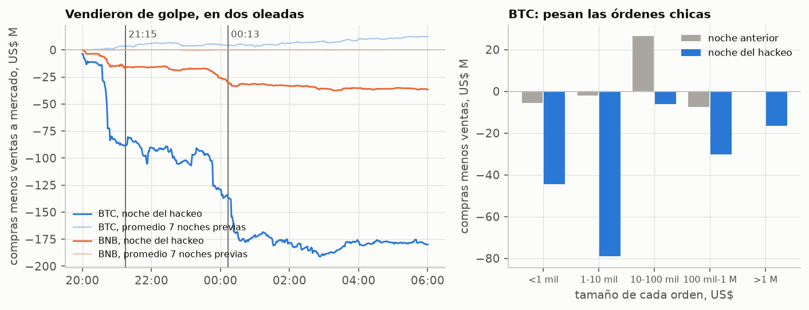
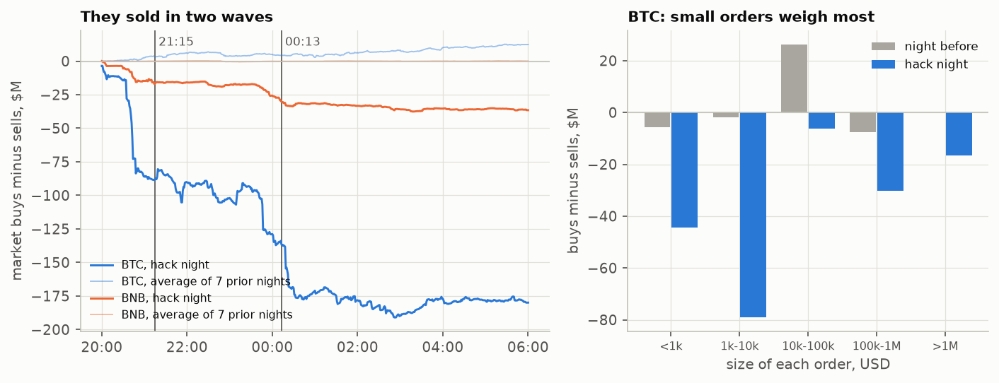
Cómo leerlo: izquierda: si la línea baja, se vende a mercado más de lo que se compra; las líneas claras son una noche normal, casi planas. Derecha: la misma venta de BTC según el tamaño de cada orden. Ojo: los algoritmos parten órdenes grandes, así que chica no significa persona común.How to read it: left: when the line falls, more is sold at market than bought; pale lines are a normal night, nearly flat. Right: the same BTC selling by size of order. Note: algorithms split large orders, so small does not mean an ordinary person.
06¿Hubo una corrida contra Binance?Was there a run on Binance?
Respuesta cortaShort answer
Sí, pero ordenada. Al reabrir, los clientes sacaron 8,7 mil millones de dólares en dos días, 6,0% de lo que había. Mientras los retiros estuvieron cerrados, Binance quedó apenas 0,09% más caro que Coinbase: el mercado no temió una quiebra.
Yes, but an orderly one. After reopening, customers took out $8.7 billion in two days, 6.0% of holdings. While withdrawals were halted, Binance sat just 0.09% above Coinbase: the market did not fear a collapse.
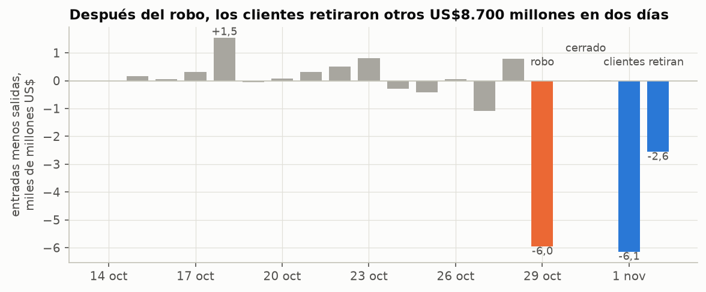
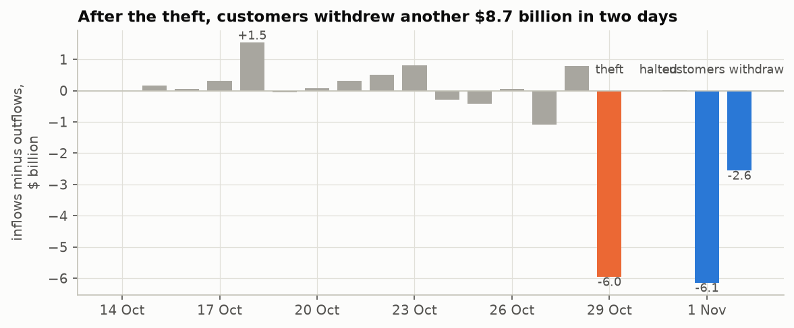
Cómo leerlo: cada barra es lo que entró menos lo que salió de las wallets de Binance ese día, sin contar cambios de precio. La naranja es el robo. Las azules son clientes retirando al reabrir. Las grises son días normales.How to read it: each bar is what came in minus what left Binance's wallets that day, not counting price changes. Orange is the theft. Blue is customers withdrawing after reopening. Grey is normal days.
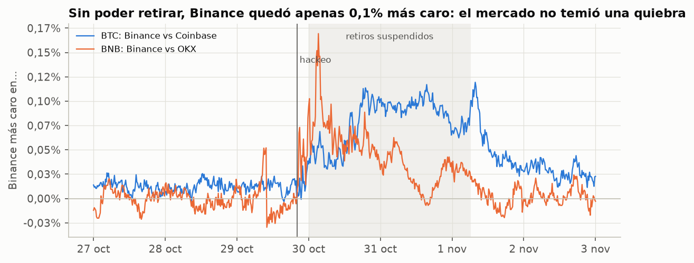
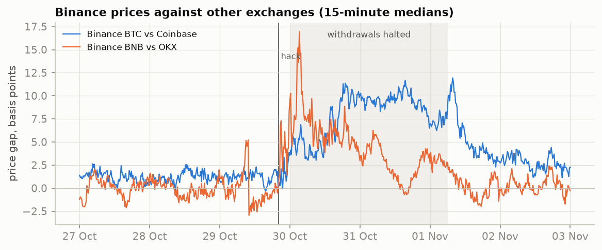
Cómo leerlo: cuánto más caro está un precio en Binance que en otro exchange. En una crisis grave, como FTX en 2022, esa diferencia se dispara porque un dólar atrapado vale menos. Aquí subió a unos 0.1% y volvió.How to read it: how much dearer a price is on Binance than on another exchange. In a severe crisis, like FTX in 2022, that gap explodes because a trapped dollar is worth less. Here it rose to about 0.1% and came back.
Mediana BTC contra Coinbase: +0,09% con retiros cerrados y +0,01% la semana previa. El flujo del día del robo fue -5,95 mil millones.
Median BTC against Coinbase: +0.09% with withdrawals halted and +0.01% the week before. The flow on the day of the theft was $-5.95 billion.
07¿Y las acciones de empresas cripto?And the shares of crypto companies?
Respuesta cortaShort answer
Cayeron fuerte, pero casi lo esperable: Coinbase perdió 11,2% un día en que el Nasdaq-100 y Bitcoin también caían. Ni contagio extra ni fuga de clientes hacia el competidor regulado.
They fell hard, but about as expected: Coinbase lost 11.2% on a day when the Nasdaq-100 and Bitcoin were falling too. No extra contagion, and no flight to the regulated competitor.
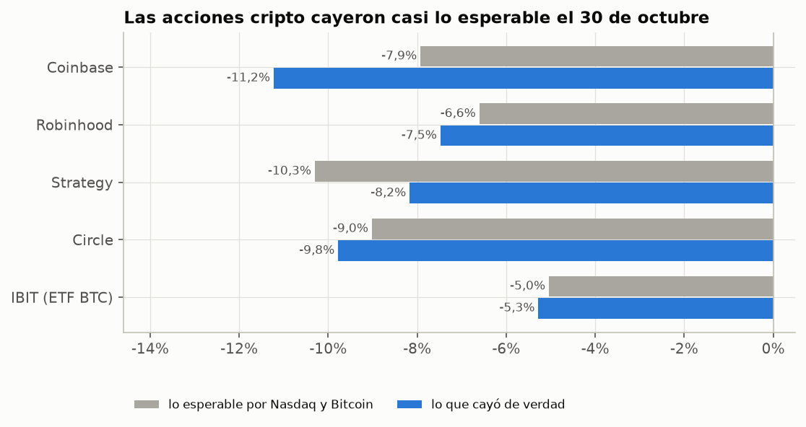
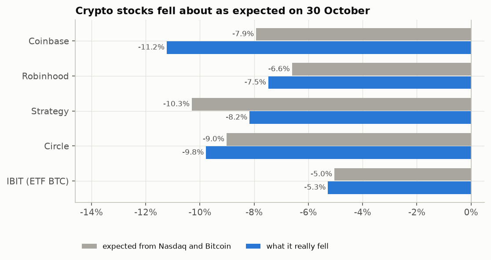
Cómo leerlo: gris es lo que cada acción habría caído solo por su relación habitual con el Nasdaq y Bitcoin. Azul es lo que cayó de verdad. Si las dos barras se parecen, no pasó nada especial.How to read it: grey is what each share would have fallen just from its usual relationship with the Nasdaq and Bitcoin. Blue is what it really fell. If the two bars look alike, nothing special happened.
Stock
Return Oct 30
Beyond expected
t (beyond ±2 is unusual)
Acción
Retorno 30 oct
Más allá de lo esperado
t (más allá de ±2 es inusual)
COIN
-11.2%
-3.3%
-1.2
HOOD
-7.5%
-0.9%
-0.2
MSTR
-8.2%
+2.1%
+0.7
CRCL
-9.8%
-0.8%
-0.2
08¿Qué pasa una semana, un mes o un año después?What happens a week, a month or a year later?
Respuesta cortaShort answer
Este hackeo es demasiado reciente para saberlo, pero 35 anteriores sí se pueden medir. A una semana y a un mes, BTC no se distingue de una fecha cualquiera. A un año queda en -10,9% contra +15,6% de una fecha al azar del mismo año, una brecha grande pero no concluyente (p = 0,12), y muchos otros eventos caben en un año.
This hack is too recent to tell, but 35 earlier ones can be measured. At a week and a month, BTC cannot be told from any other date. At a year it stands at -10.9% against +15.6% for a random date of the same year, a large but inconclusive gap (p = 0.12), and many other events fit in a year.
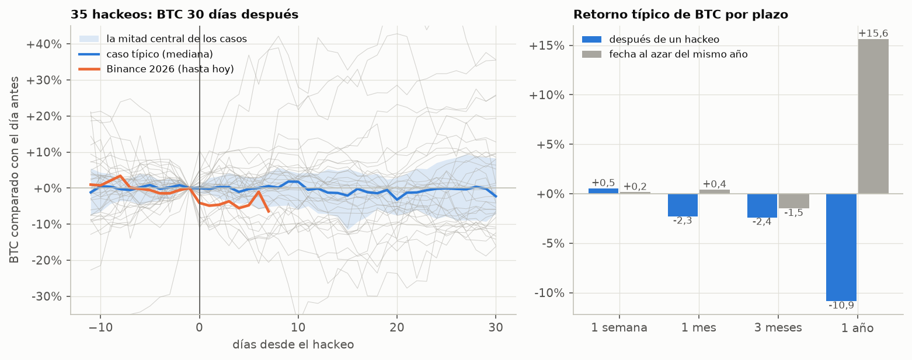
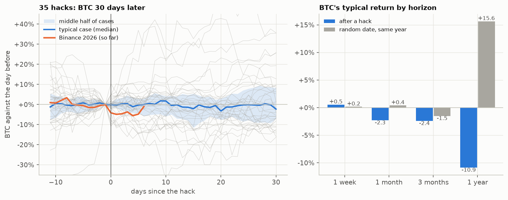
Cómo leerlo: izquierda: cada línea delgada es BTC después de un hackeo, partiendo del día anterior. La azul gruesa es el caso típico y la naranja este hackeo. Derecha: el retorno típico a cada plazo después de un hackeo (azul) contra fechas al azar del mismo año (gris). Si son parecidas, el hackeo no marcó diferencia.How to read it: left: each thin line is BTC after a hack, starting from the day before. The thick blue is the typical case and orange this hack. Right: the typical return at each horizon after a hack (blue) against random dates of the same year (grey). If they look alike, the hack made no difference.
Horizon
After a hack (median)
Random date, same year
Share that rose
p (under 0.05 is clear)
Only hacks of $250M+
Plazo
Tras un hackeo (mediana)
Fecha al azar, mismo año
Parte que subió
p (bajo 0,05 es claro)
Solo hackeos de US$250 M+
1 semana1 week
+0.5%
+0.2%
51%
0.78
-2.2%
1 mes1 month
-2.3%
+0.4%
43%
0.32
-8.2%
3 meses3 months
-2.4%
-1.5%
47%
0.89
+0.2%
1 año1 year
-10.9%
+15.6%
48%
0.12
+11.1%
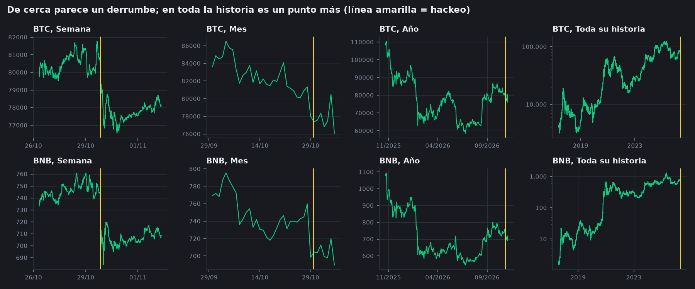
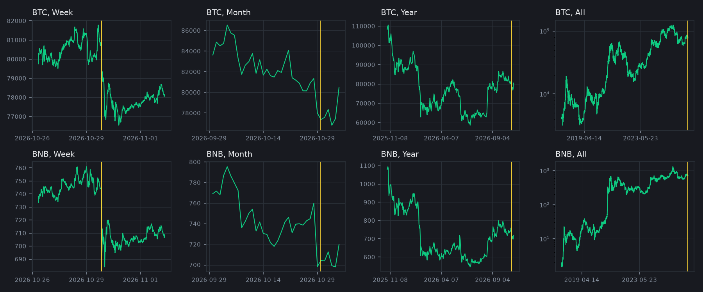
Cómo leerlo: los mismos BTC y BNB a cuatro distancias: semana, mes, año y toda su historia en Binance. La línea amarilla es el hackeo. De cerca parece un derrumbe; en la historia completa, un punto más.How to read it: the same BTC and BNB at four distances: week, month, year and their full Binance history. The yellow line is the hack. Up close it looks like a collapse; over the full history, one more point.
¿Cuánto tardó BTC en volver al precio previo tras los grandes hackeos? En 10 de 13 casos, menos de un mes. Las excepciones (Mt. Gox 2014 y BitMart 2021) coinciden con mercados bajistas largos.
How long did BTC take to regain its earlier price after the big hacks? In 10 of 13 cases, under a month. The exceptions (Mt. Gox 2014 and BitMart 2021) coincide with long bear markets.
Date
Exchange
Stolen, $M
Days to recover
Fecha
Exchange
Robado, US$ M
Días en recuperar
2014-02-07
Mt. Gox
470
861
2018-01-26
Coincheck
534
2
2018-02-12
BitGrail
170
0
2018-04-21
Gate
235
1
2020-09-29
KuCoin
281
0
2021-12-04
BitMart
196
815
2022-11-12
FTX
450
19
2023-11-10
Poloniex
126
0
2024-05-31
DMM Bitcoin
305
4
2024-07-18
WazirX: India
235
2
2025-02-21
Bybit
1,400
77
2025-04-20
Bitget
100
0
2026-09-24
Bitget
387
1
09¿Cómo se ve esto año por año?How does this look year by year?
Respuesta cortaShort answer
2026 ya es el peor año registrado en robos, con 8,78 mil millones de dólares, y Binance es la mayor parte. Aun así, en 36 hackeos a exchanges desde 2011 el efecto promedio sobre Bitcoin no se distingue del azar (p = 0,15). Este es el 3° mayor de esos 36.
2026 is already the worst year on record for theft, with $8.78 billion, and Binance is most of it. Even so, across 36 exchange hacks since 2011 the average effect on Bitcoin cannot be told from chance (p = 0.15). This one ranks 3 of those 36.
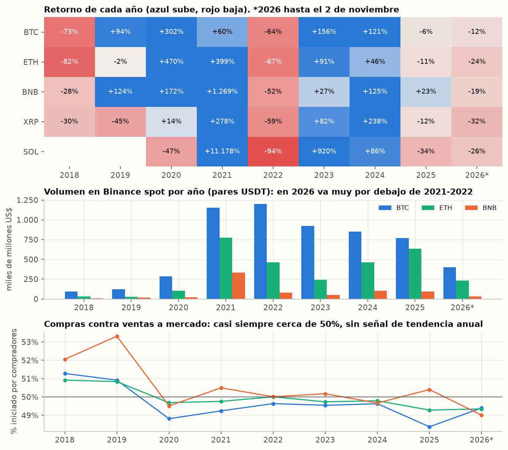
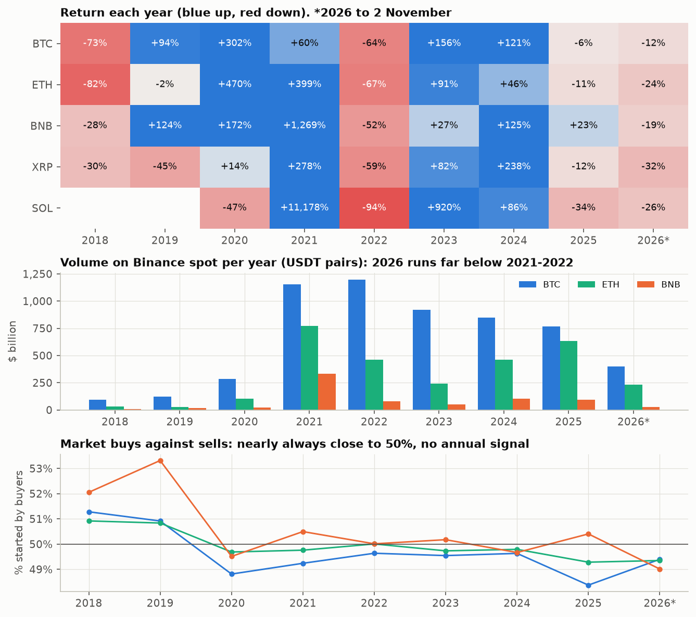
Cómo leerlo: arriba, cuánto subió o bajó cada moneda cada año. Al medio, cuánto se transó en Binance, solo pares contra USDT. Abajo, qué parte iniciaron compradores: cerca de 50% quiere decir equilibrio.How to read it: top, how much each coin rose or fell each year. Middle, how much traded on Binance, USDT pairs only. Bottom, what share buyers started: near 50% means balance.
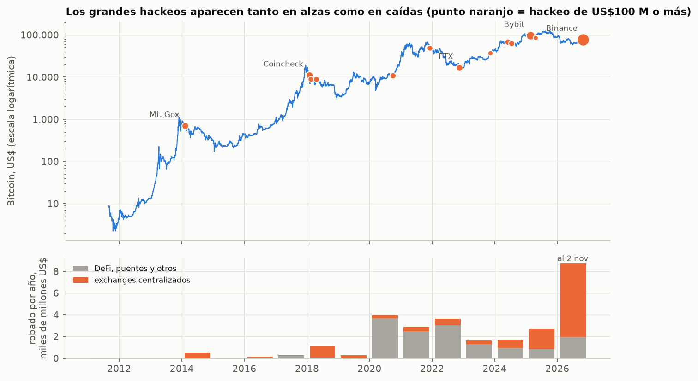
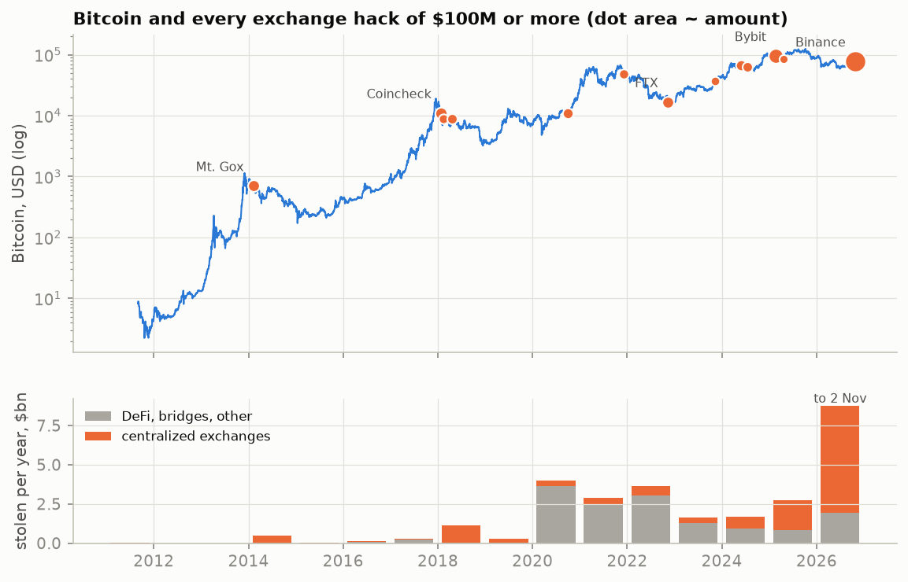
Cómo leerlo: arriba, el precio de Bitcoin desde 2011 en escala logarítmica, donde un mismo salto vertical es un mismo porcentaje. Cada punto naranjo es un gran hackeo, más grande cuanto más se robó. Abajo, lo robado cada año.How to read it: top, Bitcoin's price since 2011 on a log scale, where the same vertical jump is the same percentage. Each orange dot is a big hack, larger the more was stolen. Below, what was stolen each year.
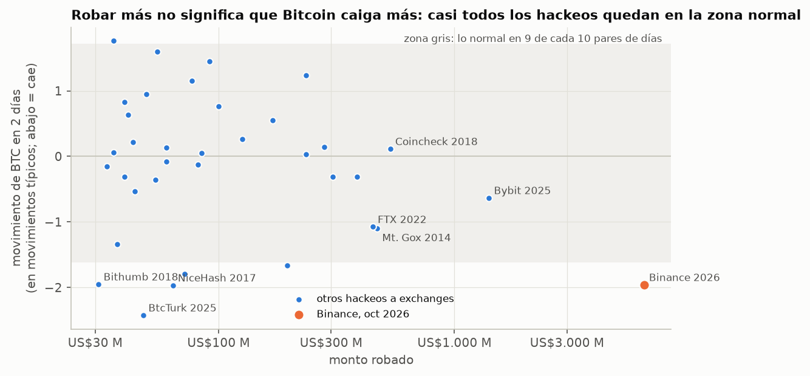
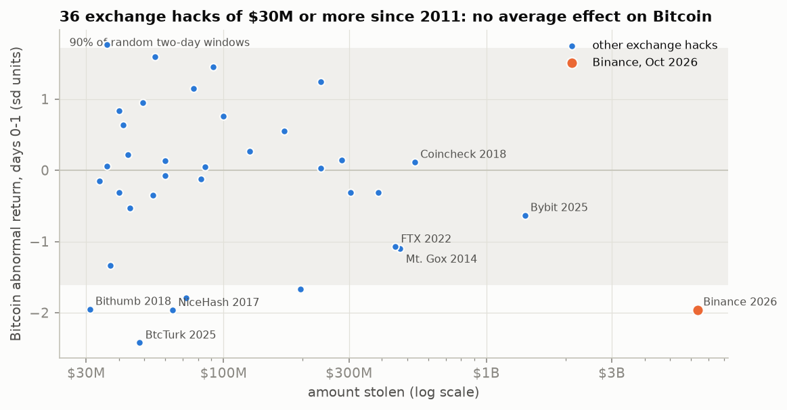
Cómo leerlo: cada punto es un hackeo: más a la derecha, más dinero robado; más abajo, más cayó Bitcoin en esos dos días. La zona gris es lo que Bitcoin hace normalmente sin ningún hackeo.How to read it: each dot is a hack: further right, more money stolen; lower, the more Bitcoin fell over those two days. The grey zone is what Bitcoin normally does with no hack at all.
10¿De verdad venía subiendo? La guerra y la macroWas it really rising? The war and the macro
Respuesta cortaShort answer
A medias. BTC subió 43% en el tercer trimestre, pero justo antes del hackeo ya iba -2,7% en octubre y 16% bajo su máximo de enero. El ambiente ya era duro: guerra con Irán, Brent sobre 110 dólares y la tasa a 10 años de EE.UU. cerca de 5%.
Partly. BTC rose 43% in the third quarter, but just before the hack it was already -2.7% in October and 16% below its January high. The backdrop was already harsh: war with Iran, Brent above $110 and the US 10-year yield near 5%.
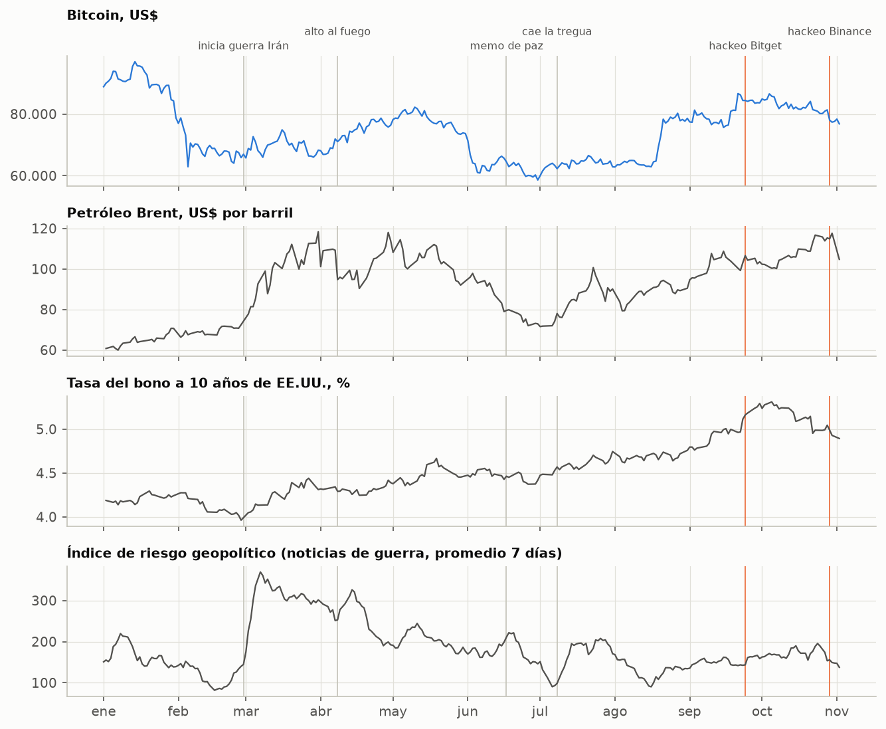
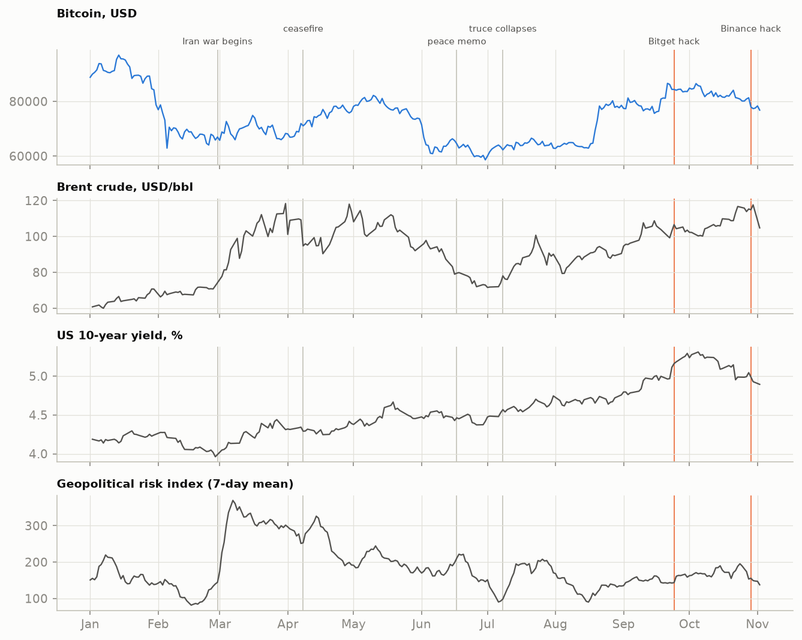
Cómo leerlo: cuatro paneles con la misma línea de tiempo. Las líneas verticales marcan los hitos. El índice geopolítico cuenta noticias de guerra y terrorismo en diez diarios: mientras más alto, más tensión. Ojo: BTC cayó de 97 mil a 63 mil en enero y febrero, antes de la guerra.How to read it: four panels on one timeline. Vertical lines mark the milestones. The geopolitical index counts war and terrorism news in ten newspapers: higher means more tension. Note: BTC fell from 97k to 63k in January and February, before the war.
11¿Se puede predecir el precio con noticias y machine learning?Can news and machine learning predict the price?
Respuesta cortaShort answer
El precio de mañana, no. Probé cinco modelos con 65 variables, incluida la guerra y las noticias, reentrenados de 2022 a 2026 sin mirar el futuro: ninguno le gana a decir "queda igual". La turbulencia de la próxima semana sí se anticipa en parte, y para eso basta la volatilidad pasada.
Tomorrow's price, no. I tried five models with 65 features, including war and news, refitted from 2022 to 2026 without looking ahead: none beats saying "no change". Next week's turbulence can be partly anticipated, and past volatility alone is enough for that.
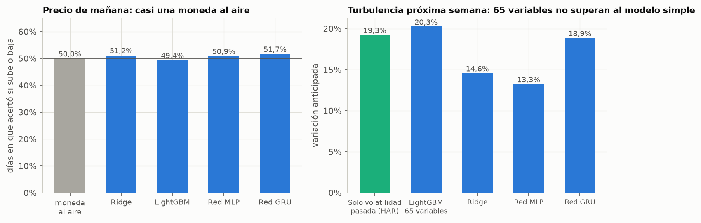
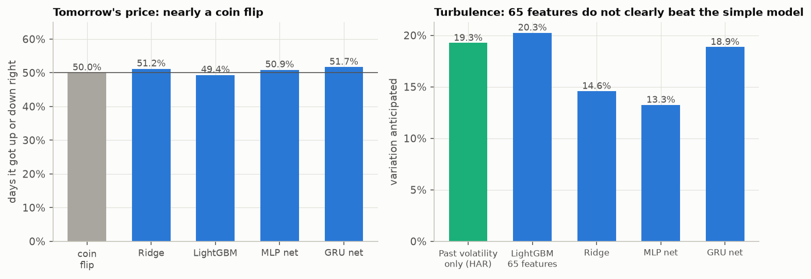
Cómo leerlo: izquierda: en qué parte de los días cada modelo acertó si el precio subía o bajaba; 50% es lanzar una moneda. Derecha: qué parte de la variación de la turbulencia anticipa cada uno; la barra verde solo usa volatilidad pasada y las azules no la superan con claridad.How to read it: left: on what share of days each model got up or down right; 50% is flipping a coin. Right: what share of the variation in turbulence each one anticipates; the green bar uses past volatility only and the blue ones do not clearly beat it.
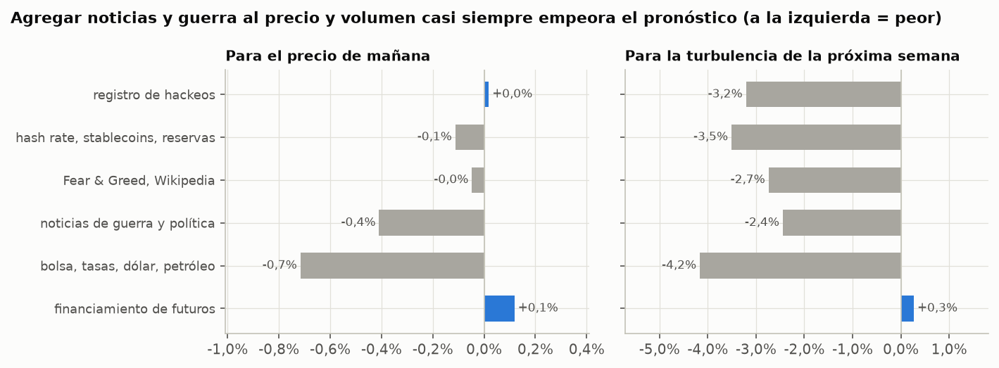
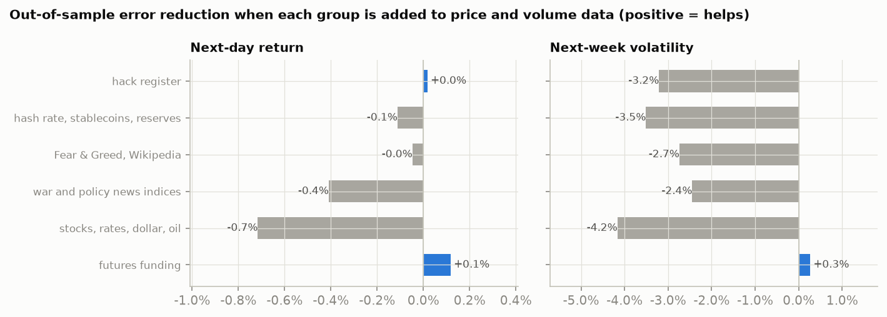
Cómo leerlo: parto de un modelo solo con precio y volumen y le agrego un grupo de datos. A la derecha el error baja; a la izquierda sube. Casi todo queda a la izquierda: lo que traen las noticias ya está en el precio.How to read it: I start from a model with price and volume only and add one group of data. To the right the error falls; to the left it rises. Nearly everything sits left: what the news brings is already in the price.
Target
Benchmark
LightGBM
Ridge
MLP
GRU (100+ epochs)
Objetivo
Referencia
LightGBM
Ridge
MLP
GRU (100+ épocas)
Retorno mañana (R²)Next-day return (R²)
0% = "queda igual"0% = "no change"
-0.6%
-1.1%
-1.4%
-1.7%
Retorno 7 días (R²)7-day return (R²)
0% = "queda igual"0% = "no change"
-2.0%
-3.8%
-12.3%
Turbulencia semana (R²)Next-week turbulence (R²)
HAR 19.3%
20.3%
14.6%
13.3%
18.9%
El GRU entrena al menos 100 épocas por ciclo, con early stopping desde ahí, y su mejor punto queda casi siempre pegado a la época 100 (mediana 102): entrenar más no agrega nada. LightGBM mejora a HAR en 1,2%, sin significancia (p = 0,28). Una estrategia de comprar o salir según el modelo pierde contra mantener en las cinco monedas.
The GRU trains at least 100 epochs per cycle, with early stopping from there, and its best point nearly always sits at epoch 100 (median 102): more training adds nothing. LightGBM beats HAR by 1.2%, not significantly (p = 0.28). A strategy of buying or leaving on the model's signal loses to holding on all five coins.
12¿Hacia dónde puede ir el precio?Where can the price go?
Respuesta cortaShort answer
No hay un número confiable, pero sí un rango. Con los movimientos históricos de BTC, a un mes lo más probable es entre 67.752 y 97.839 dólares, y a un año entre 37.696 y 173.735. La amplitud es la conclusión: a esos plazos, casi cualquier cosa es posible.
There is no reliable number, but there is a range. Using BTC's historical moves, at a month the likely range is $67,752 to $97,839, and at a year $37,696 to $173,735. The width is the conclusion: at those horizons, almost anything is possible.
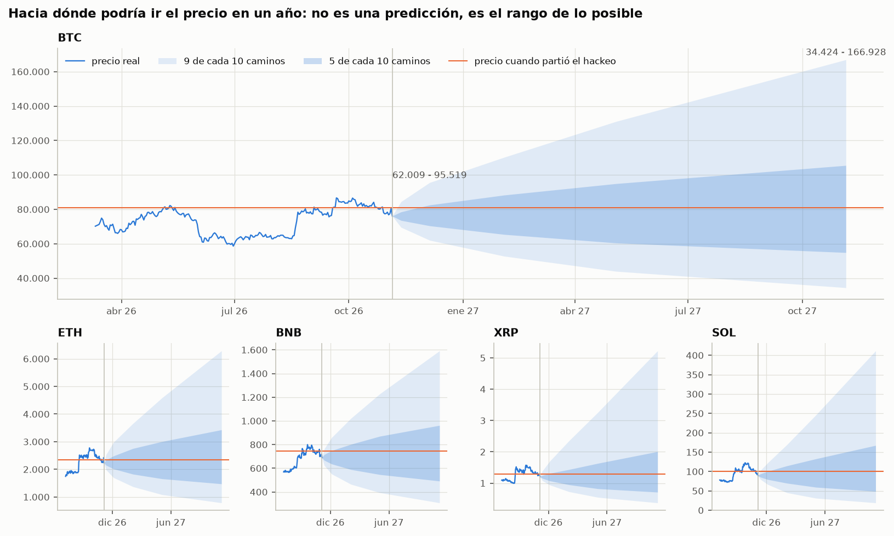
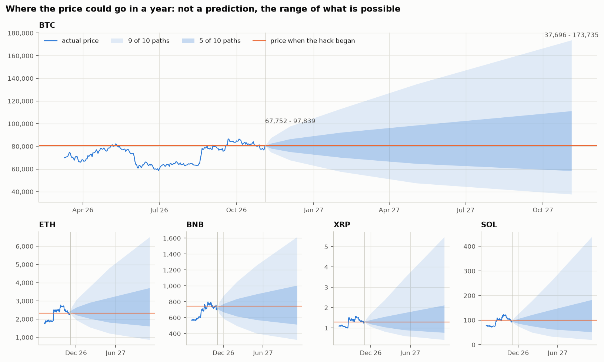
Cómo leerlo: la línea azul es el precio real hasta el último cierre. Los abanicos son miles de futuros posibles armados con pedazos de movimientos históricos de la propia moneda, sin agregar tendencia al alza ni a la baja. Azul oscuro: 5 de cada 10 caminos. Azul claro: 9 de cada 10. La línea naranja es el precio cuando partió el hackeo.How to read it: the blue line is the real price to the last close. The fans are thousands of possible futures built from pieces of the coin's own historical moves, with no upward or downward trend added. Dark blue: 5 of 10 paths. Light blue: 9 of 10. The orange line is the price when the hack began.
Coin
Last close
7 days (90%)
1 month (90%)
3 months (90%)
1 year (90%)
Chance above pre-hack price in 1 month
Moneda
Último cierre
7 días (90%)
1 mes (90%)
3 meses (90%)
1 año (90%)
Prob. sobre precio pre-hackeo en 1 mes
BTC
80,504
74,844 - 87,522
67,752 - 97,839
57,702 - 113,136
37,696 - 173,735
48%
ETH
2,425
2,198 - 2,674
1,936 - 3,089
1,555 - 3,772
869.61 - 6,510
61%
BNB
719.99
655.32 - 791.05
584.71 - 885.61
495.94 - 1,055
323.15 - 1,615
38%
XRP
1.3052
1.1959 - 1.4572
1.0483 - 1.7562
0.8241 - 2.3675
0.4164 - 5.4798
48%
SOL
95.61
86.80 - 107.48
73.94 - 127.12
50.41 - 177.98
20.42 - 438.07
39%
¿Se puede confiar en estos rangos? Lo probé desde cada inicio de mes desde 2020, usando solo datos anteriores. El rango de 90% acertó 84% a 7 días, 88% a un mes, 92% a tres meses y 88% a un año. Como no agrega tendencia, en ese período el precio terminó sobre la mediana 57% de las veces: es un poco pesimista cuando el mercado sube. A un año, esos resultados se solapan, así que hay pocos casos realmente independientes.
Can these ranges be trusted? I tested them from every month-start since 2020, using only earlier data. The 90% range held 84% at 7 days, 88% at a month, 92% at three months and 88% at a year. Since it adds no trend, the price ended above the median 57% of the time in that period: a little pessimistic when the market rises. At a year those results overlap, so there are few truly independent cases.
13¿Cómo le va al pronóstico de corto plazo?How is the short-term forecast doing?
Respuesta cortaShort answer
Lo congelé con datos al 2026-11-02 para poder revisarlo honestamente. Sus medianas son casi "queda igual", así que lo útil es la banda: históricamente contuvo 89% de los movimientos a un día y 86% a 7 días. No vio venir el hackeo, y ninguna de las cinco monedas quedó dentro de la banda ese día.
I froze it with data to 2026-11-02 so it can be checked honestly. Its medians are almost "no change", so what is useful is the band: historically it contained 89% of one-day moves and 86% of 7-day ones. It did not see the hack coming, and none of the five coins stayed inside its band that day.
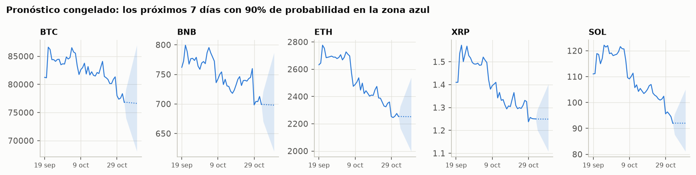
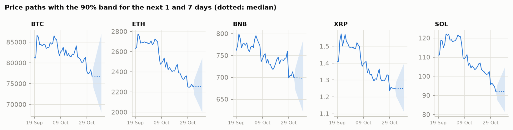
Cómo leerlo: la línea es el precio y la zona azul el rango de 90% para los próximos 1 y 7 días; la línea punteada es la mediana.How to read it: the line is the price and the blue zone the 90% range for the next 1 and 7 days; the dotted line is the median.
Coin
Horizon
Date
Last close
5%
Median
95%
Moneda
Horizonte
Fecha
Último cierre
5%
Mediana
95%
BNB
1d
2026-11-03
699.25
670.40
699.18
721.39
BNB
7d
2026-11-09
699.25
619.80
698.01
786.69
BTC
1d
2026-11-03
76,816
73,987
76,820
79,192
BTC
7d
2026-11-09
76,816
68,088
76,627
86,972
ETH
1d
2026-11-03
2,253
2,167
2,253
2,329
ETH
7d
2026-11-09
2,253
1,997
2,252
2,538
SOL
1d
2026-11-03
91.98
87.62
92.05
95.53
SOL
7d
2026-11-09
91.98
81.12
92.02
105.07
XRP
1d
2026-11-03
1.2502
1.2016
1.2498
1.2917
XRP
7d
2026-11-09
1.2502
1.1082
1.2494
1.4018
Cada día GitHub Actions compara este pronóstico congelado del 2026-11-02 con los cierres publicados. Revisado el 2026-11-06: 5 resueltos, 5 dentro de la banda de 90%.
Every day GitHub Actions compares this forecast, frozen on 2026-11-02, with the published closes. Checked 2026-11-06: 5 resolved, 5 inside the 90% band.
Coin
Horizon
Date
90% band
Close
Band
Error vs median
Error vs "no change"
Moneda
Horizonte
Fecha
Banda 90%
Cierre
Banda
Error contra mediana
Error contra "sin cambio"
BNB
1d
2026-11-03
670.40 - 721.39
698.14 (binance)
dentroinside
-0.1%
-0.2%
BTC
1d
2026-11-03
73,987 - 79,192
77,454 (binance)
dentroinside
+0.8%
+0.8%
ETH
1d
2026-11-03
2,167 - 2,329
2,275 (binance)
dentroinside
+1.0%
+1.0%
SOL
1d
2026-11-03
87.62 - 95.53
92.83 (binance)
dentroinside
+0.8%
+0.9%
XRP
1d
2026-11-03
1.2016 - 1.2917
1.2767 (binance)
dentroinside
+2.2%
+2.1%
BNB
7d
2026-11-09
619.80 - 786.69
pendientepending
BTC
7d
2026-11-09
68,088 - 86,972
pendientepending
ETH
7d
2026-11-09
1,997 - 2,538
pendientepending
SOL
7d
2026-11-09
81.12 - 105.07
pendientepending
XRP
7d
2026-11-09
1.1082 - 1.4018
pendientepending
GlosarioGlossary
Hot wallet
billetera conectada a internet con la que el exchange paga retiros.
wallet connected to the internet that the exchange uses to pay withdrawals.
Vela
resume un período: apertura, cierre, máximo y mínimo.
summarizes a period: open, close, high and low.
Futuros perpetuos
contratos para apostar al precio sin comprar la moneda, sin fecha de vencimiento.
contracts to bet on the price without buying the coin, with no expiry.
Interés abierto
total de dinero apostado en futuros en ese momento.
total money committed in futures at that moment.
Orden a mercado
compra o venta apurada, al mejor precio disponible en ese momento.
a hurried buy or sell, at the best price available right then.
Mediana
el valor del medio: la mitad de los casos queda arriba y la mitad abajo.
the middle value: half the cases are above and half below.
p
probabilidad de ver una diferencia así solo por azar; bajo 0.05 se suele considerar clara.
the chance of seeing such a gap by luck alone; under 0.05 is usually considered clear.
R²
qué parte de la variación anticipa un modelo. Negativo: lo hace peor que la referencia.
what share of the variation a model anticipates. Negative: worse than the benchmark.
HAR
modelo simple que anticipa la turbulencia solo con la del último día, semana y mes.
a simple model that anticipates turbulence using only that of the last day, week and month.
Banda de 90%
rango donde debería caer el precio 9 de cada 10 veces.
the range the price should land in 9 times out of 10.
Walk-forward
reentrenar cada período solo con lo conocido hasta entonces, sin mirar el futuro.
refitting each period on only what was known by then, without looking ahead.
Época
una pasada completa de la red neuronal por los datos de entrenamiento.
one full pass of the neural network over the training data.
Early stopping
detener el entrenamiento cuando deja de mejorar sobre datos que no usó para aprender.
stopping training when it no longer improves on data it did not learn from.
Nada de esto es una recomendación de inversión. Montos y horas del robo: TRM Labs y cronologías de prensa;
Binance no ha publicado un informe técnico. Todo el resto sale de datos públicos y del código del repositorio.Nothing here is investment advice. Stolen amounts and times: TRM Labs and press timelines; Binance has not published a
post-mortem. Everything else comes from public data and the code in the repository.